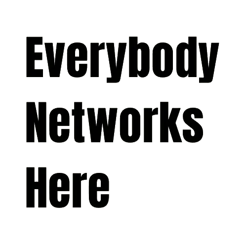
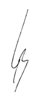

Before anything is stripped, we measure where the time and the decisions actually go. You, your key people and your team answer the same questions, where the answers differ, the clutter sits.
Book the free diagnostic
Cleanse your business systems, win your time back.
We help scale-ups cleanse the systems clogged by meetings nobody needs, reports nobody reads and decisions nobody takes, so time flows back into growing the company.
Featured in:



Fewer meetings Fewer reports More decisions

Most scale-ups don't have a strategy problem. They have a company full of work that piled up as they grew, meetings that outlived their purpose, reports nobody reads, decisions that wait on founder’s desk, all kept alive by one sentence: "that's how we've always done it."
OPS Detox clears out what growth left behind. Together with your team, we strip away the meetings, reports and approval layers that no longer serve the business, and rebuild a structure your people can run on their own, long after we have left.
Three ways to work together
Oscar de GrauwFounder | Speaker | Visionary

Programs
Three ways to work together
OPS Detox
A few intensive hours with your leadership team. In the Speak Up Gym and over the Out Loud card game, people practise saying the uncomfortable thing out loud and the clutter starts to show.
Learn moreWorkshops


Keynotes
Oscar’s keynotes start with a story few audiences forget. Twenty-three years ago he ran toward a train and survived. What followed, from seventeen years at Sony to a sunrise on Kilimanjaro, became the question he leaves every room with: am I truly living my life, or simply surviving the one I inherited?
Learn moreWhat leaders say
The IP the detox runs on
1
Learn more
See – Strip – Choose™
The core method.
Make the clutter visible before touching it, remove what no longer earns its place, then decide deliberately what the company keeps. Every engagement runs through these three moves.
2
Learn more
Truth Latency™
The delay between knowing and saying.
In most companies someone knew the truth weeks before it was said out loud. That lag is measurable, it compounds, and shortening it is the fastest route to faster decisions.
3
Learn more
DRMT™
The decision engine.
Who decides, who is consulted, and what happens when nobody does. DRMT closes the ownership vacuum that leaves decisions queued on the founder's desk.
For Oscar: the three one-liners and descriptions above are drafted from the existing site copy, not from your own wording. DRMT™ is shown as "the decision engine" because that is the only description that exists. The three framework pages do not exist yet, so Learn more points at Work With Us.
OPS Detox outcomes:
less non-essential meeting time. Up to €8K reclaimed per employee
faster decision cycles. Less escalation, faster execution
less reporting overhead. €50K+ reclaimed capacity per team/year
tooling & SaaS cost optimization. €150K-300K on a €1M spend

About Oscar de Grauw
Why work with me
I spent 17 years inside complex, international organizations, working across borders, departments and leadership levels. I've seen strategies succeed and fail because day-to-day operations couldn't keep up.
I don't approach your organization as an outsider with a framework. I work from the inside out, focusing on how work really flows.
My work is built on frameworks I developed myself: See – Strip – Choose™, Truth Latency™ and DRMT™, not someone else's playbook. You get a repeatable, structured approach that scales.
What will you choose?
Clarity is the default. Switch back to see the noise.